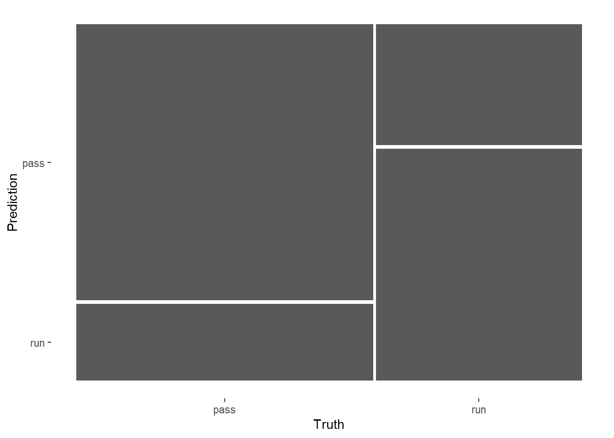
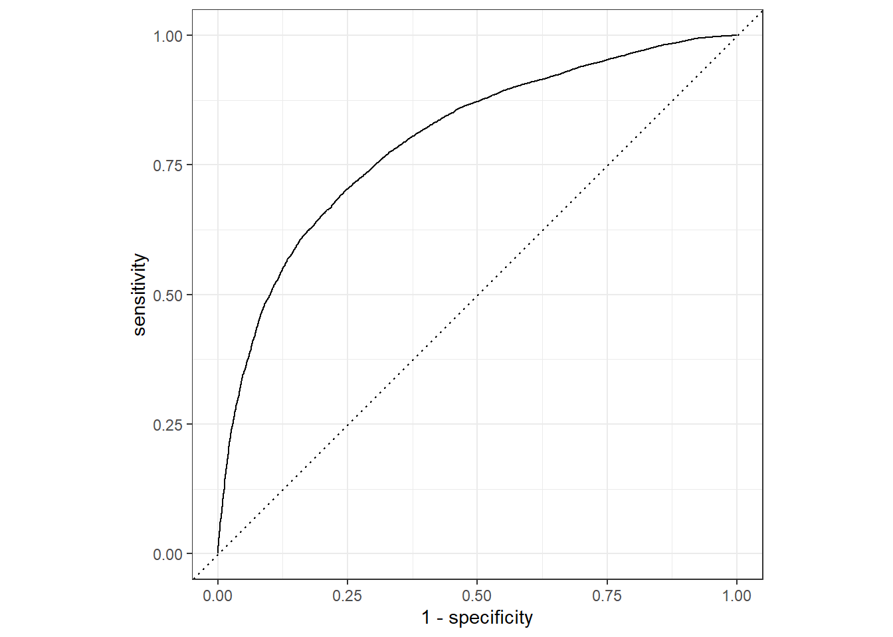
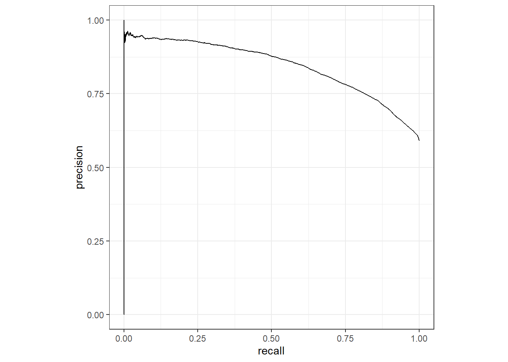
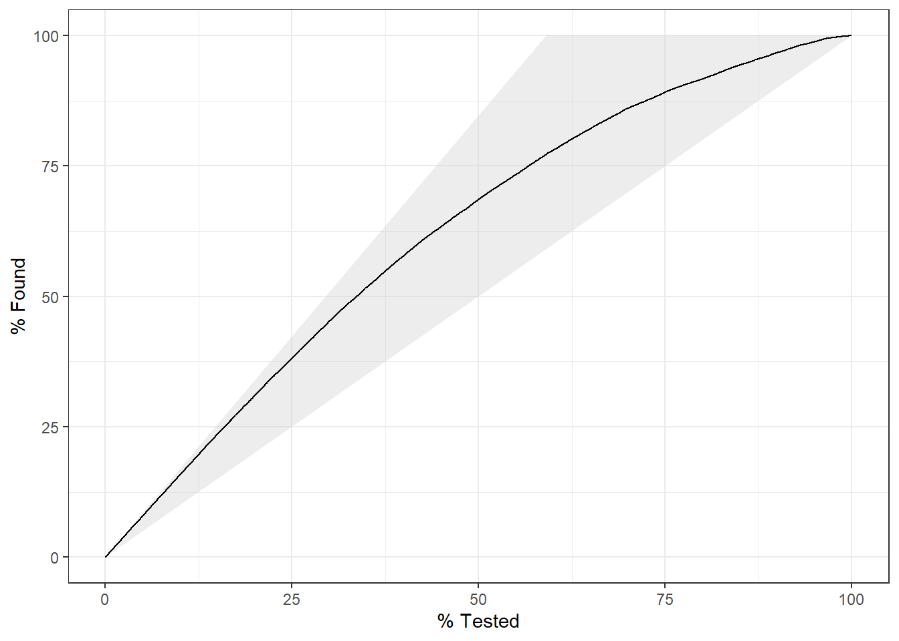
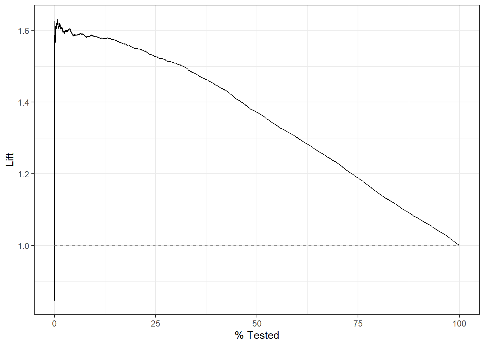

suppressPackageStartupMessages(library(tidyverse))
suppressPackageStartupMessages(library(tidymodels))
tidymodels_prefer()35 tidymodels手动绘制校准曲线
很多人都开始用tidymodels了，但是很多人还没意识到，tidymodels目前还不支持一键绘制校准曲线！(更新：目前已支持，下面会讲到)相同类型的mlr3也是不支持的，都说在开发中！开发了1年多了，还没开发好！
大家可以去项目的github相关的issue里面留言，引起开发者重视。。。
总的来说，在临床预测模型这个领域，目前还是一些分散的R包更好用，尤其是涉及到时间依赖性的生存数据时，tidymodels和mlr3目前还无法满足大家的需求~
但是很多朋友想要用这俩包画校准曲线曲线，其实还是可以搞一下的，挺简单的，之前介绍过很多次了，校准曲线就是散点图，横坐标是预测概率，纵坐标是实际概率（换过来也行！）。不理解的请翻看前面的内容。
今天先介绍下tidymodels的校准曲线画法。
35.1 加载数据和R包
没有安装的R包的自己安装下~
由于要做演示用，肯定要一份比较好的数据才能说明问题，今天用的这份数据，结果变量是一个二分类的。
一共有91976行，26列，其中play_type是结果变量，因子型，其余列都是预测变量。
rm(list = ls())
all_plays <- read_rds("./datasets/all_plays.rds")
glimpse(all_plays)
## Rows: 91,976
## Columns: 26
## $ game_id <dbl> 2017090700, 2017090700, 2017090700, 2017090…
## $ posteam <chr> "NE", "NE", "NE", "NE", "NE", "NE", "NE", "…
## $ play_type <fct> pass, pass, run, run, pass, run, pass, pass…
## $ yards_gained <dbl> 0, 8, 8, 3, 19, 5, 16, 0, 2, 7, 0, 3, 10, 0…
## $ ydstogo <dbl> 10, 10, 2, 10, 7, 10, 5, 2, 2, 10, 10, 10, …
## $ down <ord> 1, 2, 3, 1, 2, 1, 2, 1, 2, 1, 1, 2, 3, 1, 2…
## $ game_seconds_remaining <dbl> 3595, 3589, 3554, 3532, 3506, 3482, 3455, 3…
## $ yardline_100 <dbl> 73, 73, 65, 57, 54, 35, 30, 2, 2, 75, 32, 3…
## $ qtr <ord> 1, 1, 1, 1, 1, 1, 1, 1, 1, 1, 1, 1, 1, 1, 1…
## $ posteam_score <dbl> 0, 0, 0, 0, 0, 0, 0, 0, 0, 0, 7, 7, 7, 7, 7…
## $ defteam <chr> "KC", "KC", "KC", "KC", "KC", "KC", "KC", "…
## $ defteam_score <dbl> 0, 0, 0, 0, 0, 0, 0, 0, 0, 7, 0, 0, 0, 0, 0…
## $ score_differential <dbl> 0, 0, 0, 0, 0, 0, 0, 0, 0, -7, 7, 7, 7, 7, …
## $ shotgun <fct> 0, 0, 1, 1, 1, 0, 1, 0, 0, 1, 1, 1, 1, 1, 0…
## $ no_huddle <fct> 0, 0, 0, 1, 1, 1, 1, 0, 0, 0, 0, 0, 0, 0, 0…
## $ posteam_timeouts_remaining <fct> 3, 3, 3, 3, 3, 3, 3, 3, 3, 3, 3, 3, 3, 3, 3…
## $ defteam_timeouts_remaining <fct> 3, 3, 3, 3, 3, 3, 3, 3, 3, 3, 3, 3, 3, 3, 3…
## $ wp <dbl> 0.5060180, 0.4840546, 0.5100098, 0.5529816,…
## $ goal_to_go <fct> 0, 0, 0, 0, 0, 0, 0, 1, 1, 0, 0, 0, 0, 0, 0…
## $ half_seconds_remaining <dbl> 1795, 1789, 1754, 1732, 1706, 1682, 1655, 1…
## $ total_runs <dbl> 0, 0, 0, 1, 2, 2, 3, 3, 3, 0, 4, 4, 4, 5, 5…
## $ total_pass <dbl> 0, 1, 2, 2, 2, 3, 3, 4, 5, 0, 5, 6, 7, 7, 8…
## $ previous_play <fct> First play of Drive, pass, pass, run, run, …
## $ in_red_zone <fct> 0, 0, 0, 0, 0, 0, 0, 1, 1, 0, 0, 0, 0, 1, 1…
## $ in_fg_range <fct> 0, 0, 0, 0, 0, 1, 1, 1, 1, 0, 1, 1, 1, 1, 1…
## $ two_min_drill <fct> 0, 0, 0, 0, 0, 0, 0, 0, 0, 0, 0, 0, 0, 0, 0…35.2 数据划分
把75%的数据用于训练集，剩下的做测试集。
set.seed(20220520)
# 数据划分，根据play_type分层
split_pbp <- initial_split(all_plays, 0.75, strata = play_type)
train_data <- training(split_pbp) # 训练集
test_data <- testing(split_pbp) # 测试集35.3 数据预处理
使用recipe包进行数据预处理，如果你认真学习过caret，那这个包你应该不陌生。
pbp_rec <- recipe(play_type ~ ., data = train_data) %>%
step_rm(half_seconds_remaining,yards_gained, game_id) %>% # 移除这3列
step_string2factor(posteam, defteam) %>% # 变为因子类型
#update_role(yards_gained, game_id, new_role = "ID") %>%
# 去掉高度相关的变量
step_corr(all_numeric(), threshold = 0.7) %>%
step_center(all_numeric()) %>% # 中心化
step_zv(all_predictors()) # 去掉零方差变量35.4 建立模型
就以经常用的随机森林进行演示，这里就不演示调参了，因为也不一定比默认参数的结果好……
选择随机森林，建立workflow：
rf_spec <- rand_forest(mode = "classification") %>%
set_engine("ranger",importance = "permutation")
rf_wflow <- workflow() %>%
add_recipe(pbp_rec) %>%
add_model(rf_spec)在训练集建模：
fit_rf <- rf_wflow %>%
fit(train_data)35.5 模型评价
应用于测试集：
pred_rf <- test_data %>% select(play_type) %>%
bind_cols(predict(fit_rf, test_data, type = "prob")) %>%
bind_cols(predict(fit_rf, test_data, type = "class"))
#save(pred_rf, file = "../000预测模型/pred_rf.rdata")这个pred_rf就是接下来一系列操作的基础，非常重要！！
head(pred_rf)
## # A tibble: 6 × 4
## play_type .pred_pass .pred_run .pred_class
## <fct> <dbl> <dbl> <fct>
## 1 pass 0.312 0.688 run
## 2 pass 0.829 0.171 pass
## 3 pass 0.806 0.194 pass
## 4 pass 0.678 0.322 pass
## 5 run 0.184 0.816 run
## 6 run 0.544 0.456 pass查看模型表现：
你知道的又或者不知道的指标基本上都有：
metricsets <- metric_set(accuracy, mcc, f_meas, j_index)
pred_rf %>% metricsets(truth = play_type, estimate = .pred_class)
## # A tibble: 4 × 3
## .metric .estimator .estimate
## <chr> <chr> <dbl>
## 1 accuracy binary 0.731
## 2 mcc binary 0.441
## 3 f_meas binary 0.774
## 4 j_index binary 0.439混淆矩阵：
pred_rf %>% conf_mat(truth = play_type, estimate = .pred_class)
## Truth
## Prediction pass run
## pass 10622 3226
## run 2962 6185混淆矩阵图形版：
pred_rf %>%
conf_mat(play_type,.pred_class) %>%
autoplot()
大家最喜欢的AUC：
pred_rf %>% roc_auc(truth = play_type, .pred_pass)
## # A tibble: 1 × 3
## .metric .estimator .estimate
## <chr> <chr> <dbl>
## 1 roc_auc binary 0.799可视化结果，首先是大家喜闻乐见的ROC曲线：
pred_rf %>% roc_curve(truth = play_type, .pred_pass) %>%
autoplot()
pr曲线：
pred_rf %>% pr_curve(truth = play_type, .pred_pass) %>%
autoplot()
gain_curve：
pred_rf %>% gain_curve(truth = play_type, .pred_pass) %>%
autoplot()
lift_curve：
pred_rf %>% lift_curve(truth = play_type, .pred_pass) %>%
autoplot()
就是没有校准曲线！！
35.6 校准曲线
下面给大家手动画一个校准曲线。
两种画法，差别不大，主要是分组方法不一样，第2种分组方法是大家常见的哦~
如果你还不懂为什么我说校准曲线是散点图，建议你先看看前面的基础知识，看了不吃亏。
calibration_df <- pred_rf %>%
mutate(pass = if_else(play_type == "pass", 1, 0),
pred_rnd = round(.pred_pass, 2)
) %>%
group_by(pred_rnd) %>%
dplyr::summarize(mean_pred = mean(.pred_pass),
mean_obs = mean(pass),
n = n()
)
ggplot(calibration_df, aes(mean_pred, mean_obs))+
geom_point(aes(size = n), alpha = 0.5)+
geom_abline(linetype = "dashed")+
theme_minimal()
第2种方法：
cali_df <- pred_rf %>%
arrange(.pred_pass) %>%
mutate(pass = if_else(play_type == "pass", 1, 0),
group = c(rep(1:249,each=92), rep(250,87))
) %>%
group_by(group) %>%
dplyr::summarise(mean_pred = mean(.pred_pass),
mean_obs = mean(pass)
)
cali_plot <- ggplot(cali_df, aes(mean_pred, mean_obs))+
geom_point(alpha = 0.5)+
geom_abline(linetype = "dashed")+
theme_minimal()
cali_plot
两种方法差别不大，效果都是很好的，这就说明，好就是好，不管你用什么方法，都是好！如果你的数据很烂，那大概率你的结果也是很烂！不管用什么方法都是烂！
最后，随机森林这种方法是可以计算变量重要性的，当然也是能把结果可视化的。
顺手给大家演示下如何可视化随机森林结果的变量重要性：
library(vip)
fit_rf %>%
extract_fit_parsnip() %>%
vip(num_features = 10)
所以，校准曲线的画法，你学会了吗？